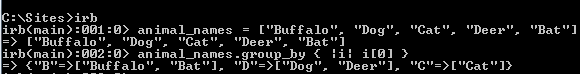

For this week's post I decided to research the #group_by method, which is a part of the Enumerable mixin. It's not one of those methods that you might need to use for almost every code block that you write. However, it's very effective in what it does and could become a useful tool when you trying to (you guessed it!) group the elements that are being passed to the code block.
The principle behind #group_by method is not too complicated. You're supposed to call it on a collection of elements (an array, most likely) and specify a code block within the curly brackets. If you don't put anything inside the code block, an enumerator will be returned:
Once all the elements are passed to the code block, a hash will be returned. The keys of this hash will be the results from the operation specified in the code block. The values, in turn, will be arrays of the elements in the original collection that correspond to the existing keys, in other words, the elements that resulted in the formation of that key.
Since this could be a little confusing, let me show you some examples here:
First, let's say that we have an array of numbers from 1 to 10. We want to group these numbers based on what remainder they have after being divided by 3. Here is what we do: Inside the code block we specify the arithmetical operation (division by 3) that will be performed for each number starting from 1 and ending with 10 and will return the remainder from division. Thus, since there are only 3 potential outcomes here (a remainder of 0, 1 or 2), the keys in the resulting hash are 0, 1 and 2. Note that the keys are not listed in arithmetical order here but instead the first key, 1, is the result of the division of the first element (1 % 3 == 1). As for the values, it should be pretty clear that for each possible remainder we have an array of elements that have resulted in the formation of this exact remainder, for example, the numbers 3, 6 and 9 have no remainder when divided by 3, thus they correspond to the key of 0 in the hash.
How about a more practical example that we are more likely to use in one of our challenges! Let's say we have an array of animal names that we would like to group based on the first letter of the name. Here is how we would go about this using #group_by:As you can see, we now have a nice little hash that's got the first letters of the animal names ("B", "D" and "C") as its keys and the corresponding animal names listed in the form of arrays, as their values. Pretty neat, huh? :)